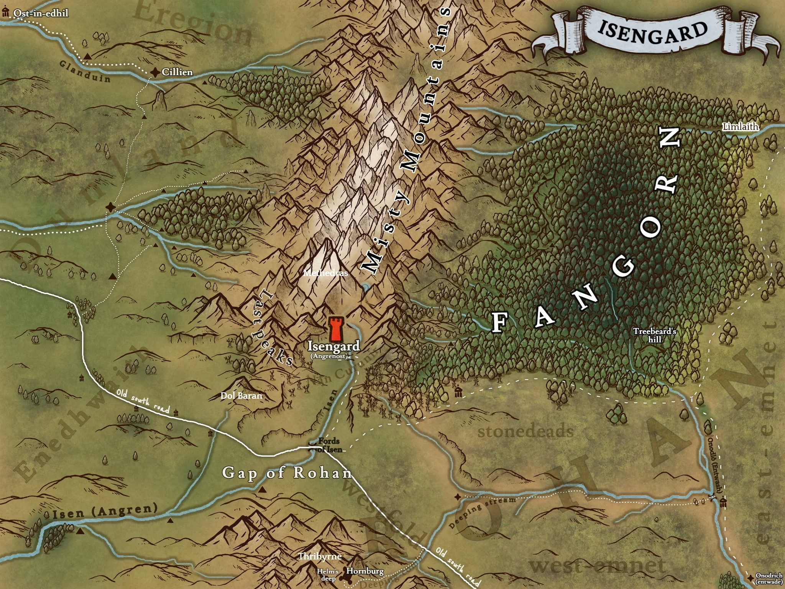
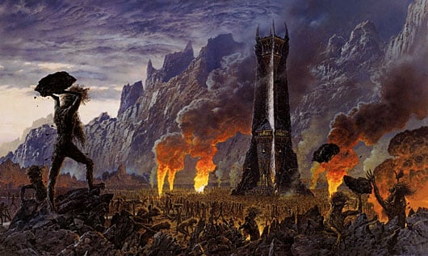

L'Isengard, nichée dans la vallée de Nan Curunír, désigne la forteresse au sud des Monts Brumeux, au nord de la Trouée de Rohan. La confusion est fréquente entre Isengard et Orthanc, la tour située en son centre. Un fleuve, l'Isen prend sa source en Isengard, et Saroumane y construira un barrage.
 